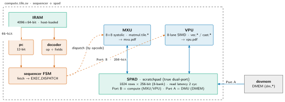
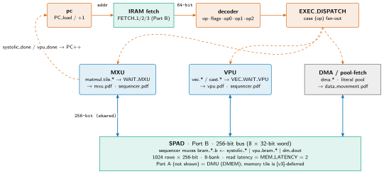
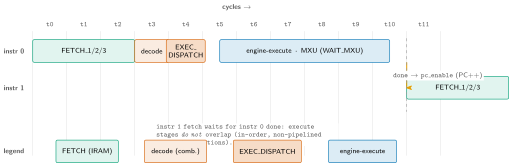
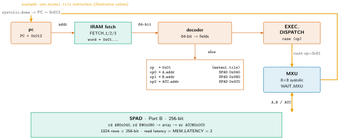
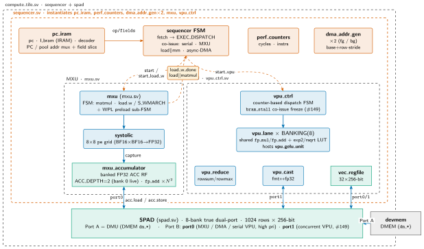

mininpu: Compute Tile¶
The compute tile (npu/src/compute_tile/) is the sequenced datapath: a control front-end fetches and decodes a kernel from IRAM and dispatches each instruction, by opcode, to one of two engines --- the MXU (systolic matrix unit) or the VPU (vector unit) --- both operating on the on-chip SPAD scratchpad. This document is the tile-level map, drawn in zoom-in block diagrams: the tile in its context, then the dispatch datapath, then the per-instruction pipeline and a worked example. Engine internals live in their own deep-dives. Every constant is owned by the SSOT (CONTRIBUTING § Constants → npu/src/npu/npu_config_pkg.sv, generated from npu/params.py); this document does not fix them by architecture.
Compute tile in context (zoom 1)¶
Slide summary (from the deck build)
compute_tile.svwraps exactly two children:sequencer(control + engines) andspad.- Control front-end (
pc_iram=pc+ IRAM +decoder, plusperf_counters/dma_addr_gen) fetches 64-bit words, the top FSM dispatches by opcode. - MXU/VPU share SPAD Port B (256-bit); the tile's own DMU fills SPAD over Port A (sync blocking or async prefetch).
Figure: ct-context

Zoom 1 --- the tile in context. compute_tile.sv wraps the sequencer (control front-end + both engines) and SPAD. The front-end fetches 64-bit words from IRAM and dispatches by opcode to MXU/VPU; both engines share SPAD Port B (256-bit), while the tile's own DMU fills SPAD over Port A (sync blocking or async prefetch).
The tile wrapper compute_tile.sv instantiates exactly two children: sequencer (all control logic + both compute engines) and spad (the scratchpad data memory). The control front-end inside the sequencer is grouped into pc_iram (the pc + IRAM (I_bram) + decoder fetch/decode trio, with the PC/pool address mux) and driven by the top FSM, which fetches 64-bit kernel words from IRAM and dispatches to the MXU and VPU engines. Two further read-only helpers hang off the FSM: perf_counters (cycle / retired-instruction counters) and dma_addr_gen (the base + row·stride row-address adder, instantiated twice --- foreground and #222 background DMA). Both engines read and write operands over SPAD Port B (256-bit); the tile's own DMU (Gemmini LoadController model, charter §5) fills and drains SPAD over Port A in parallel. SPAD is true dual-port, single-clock, so the two planes run concurrently.
Data-plane: three tiers plus a doctrine. The tile's registers form a three-tier hierarchy by value dimensionality: 0D scalar constants live in the assembler-emitted literal pool (no register; a dedicated SREG is deferred in v1), 1D reduced/weight vectors live in VREG (an fp32 register file), and 2D accumulator tiles live in ACC (a dedicated fp32 accumulator register file, physically separate from SPAD). SPAD itself is bf16 operand memory (weights, activations, and the bf16 1D vectors before they are lifted into VREG). The DMU doctrine bounds the data plane cleanly: the DMU moves bulk bf16 between the interface tile and SPAD only; ACC and VREG are never touched by the DMU and are filled or drained only by compute-engine ops (MXU mxu.matmul, VPU vpu.zero.acc, and the 0x3_ register load/store ops acc.store / acc.load / vreg.load). The full data-plane rationale (register-tier table, the dedicated-ACC decision) follows below.
Data plane: a three-tier register hierarchy¶
Slide summary (from the deck build)
- Registers organized by value dimensionality: 0D literal pool, 1D VREG (fp32), 2D ACC (fp32).
- ACC is a dedicated fp32 accumulator register file, physically separate from the bf16 SPAD operand memory.
- Each MXU PE holds active + next (inactive) weight buffers (the load/compute double-buffer).
- DMU doctrine: DMU moves bulk bf16 between interface tile and SPAD only; ACC/VREG served by compute-engine ops.
The compute tile carries a three-tier register hierarchy, organized by the dimensionality of the value each tier holds:
Table: the v1 data-plane register hierarchy, by value dimensionality. SREG (a 0D scalar register file) is deferred; 0D constants are served by the literal pool.
| Tier | Value | Home | Management |
|---|---|---|---|
| 0D | scalar constant | literal pool (assembler-emitted) | immediate index; no register (SREG deferred) |
| 1D | reduced / weight vector | VREG (fp32 register file) | compiler reg-alloc; 5-bit id |
| 2D | accumulator tile | ACC (dedicated fp32 accumulator RF) | compiler-assigned indices; no explicit alloc/free |
Supporting these, SPAD is bf16 operand memory (weights, activations, and the bf16 1D vectors --- gamma / beta / bias --- before they are lifted into VREG). The key structural decision is that ACC is a dedicated fp32 accumulator register file, physically separate from the bf16 SPAD operand memory (not an fp32 view aliasing shared SRAM). That separation is what enables high-performance tiling: in-place K-accumulation folds without a SPAD read-modify-write (for K=768, DIM=8, that removes on the order of 96× the SPAD RMW traffic a shared-memory accumulator would incur), operand loads (SPAD) and accumulator updates (ACC) no longer contend for one port/bank, and a separate ACC lets the MXU produce one tile while the VPU consumes another (tile-granular producer/consumer overlap). Exact ACC tile capacity and port count are deferred to the architecture phase (design intent: ≥2 tiles). Additionally, each MXU PE (pe.sv) holds an active and a next (inactive) weight buffer, the load/compute double-buffer that backs cross-tile weight preload (§ within-tile concurrency).
DMU doctrine. The DMU moves bulk bf16 traffic between the interface tile and SPAD, and nothing else. ACC and VREG are never touched by the DMU; they are filled and drained only by compute-engine instructions (MXU mxu.matmul, VPU vpu.zero.acc, and the 0x3_ register load/store ops acc.store / acc.load / vreg.load). A consequence used below: async DMA targets the SPAD region only, so the region fence guards SPAD only and ACC ordering is purely a busy-bit concern.
The dispatch datapath (zoom 2)¶
Slide summary (from the deck build)
pc→ IRAM →decoderslices the 64-bit word intoop · flags · op0 · op1 · op2.- EXEC_DISPATCH
case (op)fans out to MXU (mxu.load.w/mxu.matmul), VPU (vpu.*+0x3_register load/storeacc.load/acc.store/vreg.load), or the DMU (dmu.*: sync FSM-blocking or async prefetch withflush.slotfence). - Sync path: MXU/VPU/DMA all muxed onto SPAD Port B, serialized; FSM waits on
systolic_done/vpu_donebefore PC++. Async path: DMA fills Port A in background; compute continues on Port B.
Figure: ct-dispatch

Zoom 2 --- the dispatch datapath. Fetch (pc → IRAM → decoder) → EXEC_DISPATCH fans out to MXU / VPU / DMU. In the sync path MXU, VPU, and DMA all share SPAD Port B (256-bit), serialized by the FSM; in the async path the DMA unit fills Port A in the background while compute runs on Port B. The FSM waits on systolic_done / vpu_done before advancing the PC. Engine and DMA internals are deep-dives --- see the linked pages.
Each kernel iteration walks a fixed pipeline: pc presents an address to IRAM, the decoder slices the fetched 64-bit word into opcode · flags · op0 · op1 · op2, and the FSM reaches EXEC_DISPATCH, where a case (op) fans the instruction out to one of three targets --- the MXU (mxu.load.w / mxu.matmul), the VPU (vpu.* plus the 0x3_ register load/store ops acc.load / acc.store / vreg.load), or the tile's own DMU (dmu.*, Gemmini LoadController model; charter §5). The FSM then parks in WAIT_MXU until systolic_done, or in VEC_WAIT_VPU until vpu_done, before advancing the PC. The DMA unit operates in two modes. Synchronous (blocking, no async flag): the FSM parks in a DMA wait state until the transfer completes, preserving full in-order behaviour; MXU, VPU, and sync-DMA are all muxed onto the single SPAD Port B, so the sequencer serializes who touches Port B (the sequencer drives bram_*_b from the MXU (systolic_*), VPU (vpu_bram_*), or the DMA unit's own device-memory path). Async (descriptor async flag set): the transfer runs in the background, filling SPAD Port A while the sequencer continues computing on Port B (dual-port ping-pong); completion is signalled by dma_slot_done[slot], and flush.slot fences the program on that token. Async DMA is a real v1 feature (make-async-real, charter §5). Engine internals are linked out below; this document does not duplicate them.
Per-instruction pipeline (zoom 3)¶
Slide summary (from the deck build)
- Per instruction:
FETCH_1/2/3(IRAM read pipeline) →decode→EXEC_DISPATCH→ engine-execute. - Execution is not overlapped: the FSM parks in
WAIT_*untildone, so engine-execute serializes the next fetch. done→pc_enablecloses the loop: PC++ and the next fetch begins.
Figure: ct-pipeline

Zoom 3 --- the per-instruction pipeline timeline. Cycles run left-to-right; each row is one instruction. FETCH_1/2/3 pipelines the IRAM read, decode is combinational, EXEC_DISPATCH latches operands, then the engine executes for a variable number of cycles. The FSM parks in WAIT_* until the engine's done, which asserts pc_enable (PC++) and releases the next instruction's fetch --- so successive instructions do not overlap their execute stages.
The control FSM walks a fixed sequence per instruction. FETCH_1/2/3 pipelines the IRAM read against the MEM_LATENCY=2 read latency (address in FETCH_1, data valid by FETCH_3); the decoder is combinational, so decode resolves the fields in the same beat the word lands; EXEC_DISPATCH latches flags and operands and routes by opcode. The engine then runs for a variable, opcode-dependent number of cycles while the FSM parks in WAIT_MXU / VEC_WAIT_VPU. Because the next fetch cannot begin until the engine asserts done (which drives pc_enable → PC++), the execute stages of consecutive instructions do not overlap --- this is an in-order, non-pipelined-across instructions machine; the only intra-instruction pipelining is the IRAM read and the engines' own internal pipelines. The done -> pc_enable edge is the loop-closing feedback that releases the next FETCH_1.
Worked example: a mxu.matmul dispatch¶
Slide summary (from the deck build)
- example:
PC = 0x012fetches anmxu.matmulword from IRAM (weights already staged by a precedingmxu.load.w). decoderslicesop=0x01,op0=acc_out,op1=spm_x(ACC + activation-tile addresses).EXEC_DISPATCHroutes to the MXU →WAIT_MXU→systolic_done→ PC++.
Figure: ct-worked

Worked example --- one mxu.matmul instruction flowing through the front-end. The orange overlay traces the hot path with concrete values: PC=0x012 → IRAM fetch → decode (op=0x01, ACC-out + activation-tile addresses) → EXEC_DISPATCH → MXU, which switches in the preloaded weights, reads the activation tile, and writes ACC over SPAD Port B, then asserts systolic_done → PC++. Field encodings are owned by mininpu/isa; values shown are illustrative.
To make the dispatch lifecycle concrete, trace a single mxu.matmul instruction (values illustrative; field encodings are owned by mininpu/isa). The weights were staged by a preceding mxu.load.w into the inactive buffer. The PC holds 0x012; FETCH_1/2/3 reads the 64-bit word at that IRAM address. The decoder slices it into op=0x01 (mxu.matmul) plus operands op0=acc_out and op1=spm_x (the ACC destination and the activation-tile SPAD address). EXEC_DISPATCH's case (op) routes to the MXU, latching the addresses; the FSM enters WAIT_MXU. The MXU implicitly switches in the preloaded weights, reads the activation tile from SPAD Port B, streams it through the 8×8 systolic array, and writes the fp32 result tile back to acc_out over the same port. When the array drains it asserts systolic_done; the FSM takes that as pc_enable, advances the PC to 0x013, and releases the next FETCH_1.
Within-tile concurrency: hardware levers (v1)¶
Slide summary (from the deck build)
- SPAD true dual-port: Port A dedicated to the DMU, Port B to compute. Both ports operate in the same cycle; a fill and a compute can run in parallel.
- MXU per-PE weight double-buffer (load‖matmul active): each PE (
pe.sv) holds active + next (inactive) weight registers;mxu.load.w(start_load_w,S_WMARCH) fills the inactive buffer andmxu.matmulswitches. Aload.wco-issues over an in-flight matmul via the MXU concurrent-preload sub-FSM (WPL_*) +load_w_done, tracked by the sequencer'smatmul_inflight/loadw_inflightbits (#260). - Async DMA slot (make-async-real): async descriptor flag on
dmu.load.spmruns the transfer in the background on Port A; sequencer continues computing on Port B; completion token =dma_slot_done[slot];flush.slot(0x53) fences (the full-fence pseudoflushlowers toflush.slotover all slots).
Zoom 3 establishes the serial baseline: the sequencer dispatches one instruction at a time and parks in a WAIT_* state until the engine's done, so the execute stages of consecutive instructions do not overlap. Four hardware levers introduce targeted concurrency on top of this baseline; they are additive and independent of the chip-level command pipeline (which is depth-1 sequential in v1, charter §4).
- SPAD true dual-port. The scratchpad (
spad.sv) is true dual-port, single-clock: Port A is dedicated to the tile's DMU and Port B to the compute engines (MXU and VPU). Both ports operate independently in the same cycle, so a DMA fill into one SPAD address range on Port A can run concurrently with the engines reading or writing a different address range on Port B. This is the physical substrate that makes the async DMA ping-pong possible. - MXU per-PE weight double-buffer. Each PE in the systolic array (
pe.sv) carries two weight registers:weight_reg_active(the weight operand for the current MAC computation) andweight_reg_inactive(a next-weight staging register). In the ISA the two are driven by two ops:mxu.load.wstreams a weight tile north-to-south intoweight_reg_inactivewithout disturbing the active computation, andmxu.matmulfiressys_switch_in(a ripple wave through the array) to promote inactive to active, then streams activations. Because the buffers are disjoint, the next tile'smxu.load.woverlaps the current tile'smxu.matmulcompute: this is real cross-tile weight preload at the ISA level (load.w W0; matmul X0; load.w W1; matmul X1; ...), not merely within one instruction. This is now realized in RTL:mxu.load.wis a distinct dispatch (start_load_w), whose main-FSM path (S_LOAD_W_REQ/WAIT→S_WMARCH) marches a weight tile intoweight_reg_inactivewith no switch, whilemxu.matmulfiressys_switch_inat phase 2N-1 to promote weights a priorload.wpreloaded. Beyond that, aload.wcan co-issue over an in-flightmxu.matmul(load‖matmul overlap, #260): the MXU carries a concurrent weight-preload sub-FSM (WPL_IDLE/REQ/WAIT/MARCH) that reads the next weight tile only in the matmul's memory-idle window and marches it into the PE inactive buffers, emitting a second completion pulseload_w_done. The sequencer tracks the two tiles with independent in-flight bits (matmul_inflight,loadw_inflight);loadw_inflightretires onload_w_donewhile the matmul still drains, so the preload is fully hidden. The non-co-issued (serial)load.wpath stays bit-exact. - Async DMA slot (make-async-real). Setting the async descriptor flag on a
dmu.load.spm(0x40) instruction causes the transfer to run in the background, filling SPAD over Port A while the sequencer continues dispatching compute instructions on Port B (charter §5). Per the DMU doctrine the DMU moves bulk bf16 between the interface tile and SPAD only (ACC and VREG are served by compute-engine ops), so async DMA targets SPAD regions andflush.slotguards SPAD only. Completion is signalled bydma_slot_done[slot], a CSR-readable bit that the DMA unit asserts when the transfer finishes (a VTA-style dependence token). The kernel fences on that token withflush.slot(0x53), which stalls the sequencer untildma_slot_done[slot]is set, then clears it; the full-fence pseudoflushlowers toflush.slotover all slots (the standaloneflush0x52 opcode is retired). In v1 the slot depth is single-outstanding: one async prefetch in flight, sufficient given the current 32-bit AXI path at 50 MHz (bandwidth-delay product approximately one burst; charter §13(B)). - Concurrent VPU co-issue (SPAD Port B dual-master). SPAD Port B is presented as two compute masters inside
spad.sv: port0 (MXU / DMA / serialized VPU, high priority) and port1 (a second, lower-priority VPU path). While an MXU tile is in flight, a co-issuable VPU op runs onvpu_ctrlover port1 concurrently (#149). The per-bank arbiter can deny a port1 cycle; the sequencer signals this tovpu_ctrlviabram_stall, which freezes the entire VPU FSM (state + counters + all datapath/output regs, includingdoneandvreg_wr_en) so the denied request replays with no double-write. In the serial pathbram_stallis tied 0, so single-engine behaviour is bit-exact.
Table: v1 within-tile concurrency levers. Each lever is additive; the in-order serial baseline applies when no lever is active.
| Lever | What overlaps | Scope | RTL locus |
|---|---|---|---|
| SPAD dual-port | DMA fill (Port A) ‖ compute (Port B) | always on | spad.sv |
| PE weight buf. (load‖mm) | co-issued mxu.load.w ‖ in-flight mxu.matmul |
per load.w/matmul pair | mxu.sv WPL · load_w_done · pe.sv |
| Async DMA slot | DMA prefetch (Port A) ‖ sequencer compute (Port B) | opt-in per dmu.* |
dma_slot_done · flush.slot |
| VPU co-issue | concurrent VPU (port1) ‖ in-flight MXU (port0) | per co-issuable VPU op | spad.sv port0/1 · bram_stall |
Concurrency model: three layers¶
Slide summary (from the deck build)
- Layer 1a (correctness): named-register data deps enforced by busy-bit auto-stall (in-order issue).
- Layer 1b (correctness): async-DMA region deps tracked by a slot token +
flush.slotfence (SPAD only). - Layer 2 (concurrency): the nonblocking set is exactly {
mxu.matmul,mxu.load.w, async-DMA}; everything else is blocking / in-order. - Layer 3 (performance): SPAD/ACC port + bank contention is a cost-model concern, never observable.
The three levers above are the hardware mechanisms; the ISA-level ordering semantics that make them safe separate into three layers, by dependency granularity (named register vs region) and by concern (correctness vs performance):
- Layer 1a --- named-register deps (correctness, ISA). Dependencies on the small named register set (ACC register, weight buffer, VREG) are enforced by busy-bit auto-stall: in-order issue stalls until the producing op clears the target's busy bit. This is a small named set, not a general address scoreboard; it covers
load.w→matmul(switch),matmul→VPU,matmul→matmul(accum), and VPU→VPU. - Layer 1b --- region deps (correctness, ISA). An async DMA writes a SPAD region (not a named register), tracked by a slot token plus an explicit
flush.slotfence, compiler-managed. Because the DMU touches SPAD only (DMU doctrine),flush.slotguards SPAD regions only; ACC never needs a region fence. - Layer 2 --- nonblocking issue (concurrency, ISA). The nonblocking op set is exactly {
mxu.matmul→ACC,mxu.load.w→weight buffer, async-DMA→SPAD region}. Every other op (VPU including the register load/store ops, synchronous DMA) is blocking / in-order, so its output is visible to later ops by in-order completion --- this closes SPAD cross-engine ordering with no SPAD scoreboard. Tracked hardware state is small: ACC-register busy bits + weight-buffer busy bit + 2 DMA slots. Overlap arises only from independent ops on disjoint registers/tracks, arranged by the compiler. - Layer 3 --- resource contention (performance, microarch). SPAD / ACC port and bank contention resolves by arbitration and stall. This changes cycle counts, never observable results, so it is a cost-model concern (the extended cost model), not an ISA ordering concern.
Nibble → engine dispatch. The concurrency class is derivable cheaply from the opcode: the upper nibble selects the functional block (0x0_→MXU, 0x1_/0x2_/0x3_→VPU, 0x4_→DMU, 0x5_→control), and the nonblocking set is exactly {0x0_, 0x4_ with the async flag}. So a single upper-nibble test plus the async flag routes both the target engine and the blocking class at dispatch, with no per-opcode concurrency table. Because there is no hardware opportunism, speculation, or reorder, program correctness is argued from the instruction stream alone, independent of microarchitecture.
Async DMA ping-pong: within-tile concurrency (v1)¶
Slide summary (from the deck build)
- Issue:
dmu.load.spm(async=1, slot=0)starts DMA filling SPAD region A on Port A; sequencer advances immediately to the next instruction. - Overlap: compute on previously loaded region B (Port B) while DMA fills region A (Port A) in the background.
- Handshake:
dma_slot_done[0]asserts when fill completes.flush.slot 0passes in one cycle if already done, else stalls until then. - Next iteration: compute on region A; issue next async DMA for region B. Steady-state: DMA and compute always overlap.
Figure: ct-pingpong

Async DMA ping-pong: the tile's DMU fills SPAD region A over Port A while the sequencer computes on the previously loaded region B over Port B. Bands: (A) overlap --- both ports active simultaneously; (B) flush.slot 0 fence --- consumes the dma_slot_done[0] token; (C) post-fence --- sequencer computes on region A, next async DMA issues for region B. In steady state the overlap band repeats every loop iteration, hiding DRAM-to-SPAD fill latency behind compute.
In a compute-bound inner loop, the kernel issues a dmu.load.spm with the async flag before each iteration's compute block. The DMA unit begins filling the target SPAD region over Port A immediately, while the sequencer advances and starts computing on the previously prefetched region over Port B. The overlap continues until the flush.slot fence: if dma_slot_done[slot] is already asserted (fill finished before compute), the fence passes in one cycle; if compute finishes first, the sequencer stalls for the remaining fill time.
The latency exposed to the compute pipeline is max(0,; t_fill - t_compute): in the BW-limited regime (compute faster than fill) there is stall at the fence; in the compute-bound regime the fill is fully hidden and the fence is zero-cost. With the current 32-bit AXI path at 50 MHz (≈200 MB/s peak), a 32 KiB SPAD fill takes roughly 160 μs: in the compute-bound regime the ping-pong ensures the DMA is always in the background. Widening the AXI path (256-bit, toward the SPAD row width) and adding multiple-outstanding slots are [v1+] levers that further tighten the overlap; the token machinery is already in place (charter §13(B)).
Modules¶
The tile is a small, fixed set of RTL modules; the sequencer is the only stateful controller and owns both engines. The control front-end and both engines were structurally decomposed into dedicated submodules (bit-exact carve-outs); the full module-to-source-file map is the Code organization section that follows.
Table: top-level RTL modules of the compute tile (as-implemented).
| Module | Source | Role |
|---|---|---|
| compute_tile | compute_tile.sv |
Tile wrapper: sequencer (logic) + SPAD (data); exposes DMEM port (dm_*) to npu.sv; memory-tile port is [v3]-deferred |
| sequencer | sequencer.sv |
Top FSM: fetch → EXEC_DISPATCH + co-issue tracks; instantiates pc_iram, perf_counters, dma_addr_gen×2, mxu, vpu_ctrl |
| front-end | pc_iram.sv (pc · decoder) |
Fetch/decode: PC + IRAM (I_bram) + decoder + PC/pool addr mux; field layout mirrors mininpu/isa |
| MXU | mxu.sv · systolic.sv · pe.sv · mxu_accumulator.sv |
Matrix unit: 8×8 systolic array (GEMM) + banked FP32 ACC RF; distinct load.w + concurrent-preload WPL |
| VPU | vpu_ctrl.sv · vpu_lane.sv · vpu_gelu,reduce,cast_unit.sv · vec_regfile.sv |
Vector unit: counter-based controller + 8 lanes (gelu/reduce/cast FUs) + vector RF |
| spad | spad.sv |
Scratchpad BRAM: 8-bank true dual-port (A = DMU; B = port0 high-pri + port1 concurrent VPU) |
Code organization: module hierarchy¶
Slide summary (from the deck build)
- RTL lives in
npu/src/compute_tile/*.sv+ the generated param SSOTnpu/src/npu/npu_config_pkg.sv. - Front-end (
pc_iram),perf_counters,dma_addr_genare dedicated submodules ofsequencer;mxu_accumulatorofmxu;vpu_gelu,reduce,cast_unitof the VPU. All bit-exact.
Figure: ct-structure

As-implemented module hierarchy. compute_tile.sv wraps sequencer + spad. The sequencer front-end (pc_iram = pc + IRAM + decoder), perf_counters, and dma_addr_gen (×2) are extracted submodules; the MXU wraps systolic (the PE grid) and the extracted banked mxu_accumulator ACC RF; the VPU wraps vpu_lane (×BANKING, each hosting vpu_gelu_unit) plus the extracted vpu_reduce_unit / vpu_cast_unit and vec_regfile. Dataflow: fetch/dispatch (control), SPAD Port B port0/port1 (compute), the SPAD↔ACC crossing (acc.load / acc.store), and the nonblocking load‖matmul feedback (load_w_done).
All compute-tile RTL lives under npu/src/compute_tile/, plus the generated parameter SSOT npu/src/npu/npu_config_pkg.sv imported by every module. The instantiation tree is:
compute_tile.sv--- tile wrappersequencer.sv--- control + enginespc_iram.sv→pc.sv,I_bram(IRAM BRAM),decoder.svperf_counters.svdma_addr_gen.sv(×2:u_dma_addr_fg,u_dma_addr_bg)mxu.sv→systolic.sv(→pe.sv× N^2 →fpu/bf16_mul_fp32.sv,fpu/fp_add.sv);mxu_accumulator.sv(→fpu/fp_add.sv× N^2)vpu_ctrl.sv→vpu_lane.sv×BANKING (→vpu_gelu_unit.sv+fpu/LUT/mul/add primitives);vpu_reduce_unit.sv;vpu_cast_unit.sv;vec_regfile.sv
spad.sv→common/banked_sram.sv(Port A = DMU; Port B = port0 + port1)
The pc_iram, perf_counters, dma_addr_gen, mxu_accumulator, and vpu_gelu,reduce,cast_unit modules are bit-exact structural submodules (control front-end #204; MXU accumulator #241; VPU FUs #180): they define the file layout, not any change in behaviour. The load‖matmul overlap (#260) and the port0/port1 co-issue split (#149) are the behavioural features documented above.
Code organization: source-file map¶
Slide summary (from the deck build)
- One module per
.sv; parent/child edges follow the hierarchy on the previous slide. - Leaf arithmetic primitives live under
compute_tile/fpu/(bf16_mul_fp32,fp_add,fp_reduce_tree, exp2/rsqrt/tanh/recip BRAM LUTs); the SPAD SRAM undercommon/banked_sram.sv. npu_config_pkg.svadds the ACC-RF knobsACC_DEPTH=2 /ACC_RD_PORTS=1 /ACC_WR_PORTS=1.
The module-to-source-file mapping, with each module's parent (instantiation site), follows. Every module is one file under npu/src/compute_tile/ unless noted.
Table: compute-tile module → source-file map.
| Source file | Instantiated by | Role & key children |
|---|---|---|
compute_tile.sv |
npu.sv |
Tile wrapper → sequencer, spad; exposes DMEM/perf/DMA-slot ports |
sequencer.sv |
compute_tile |
Top FSM (fetch/dispatch + co-issue) → pc_iram, perf_counters, dma_addr_gen×2, mxu, vpu_ctrl |
pc_iram.sv |
sequencer |
Fetch/decode front-end → pc, I_bram, decoder; PC/pool addr mux |
pc.sv |
pc_iram |
Program-counter register (advance / jump / reset) |
decoder.sv |
pc_iram |
Combinational 64-bit field slicer (op/flags/op0--op2) |
perf_counters.sv |
sequencer |
Read-only cycle + retired-instruction counters |
dma_addr_gen.sv |
sequencer (×2) |
Combinational base + row·stride DMA row address (fg / bg) |
mxu.sv |
sequencer |
Matrix-unit FSM; load.w/S_WMARCH + WPL preload → systolic, mxu_accumulator |
systolic.sv |
mxu |
8×8 weight-stationary PE interconnect → pe× N^2 |
pe.sv |
systolic (× N^2) |
BF16×BF16→FP32 MAC PE; active/inactive weight double-buffer → fpu/ mul + add |
mxu_accumulator.sv |
mxu |
Banked FP32 ACC RF (ACC_DEPTH banks; bank 0 live) → fpu/fp_add× N^2 |
vpu_ctrl.sv |
sequencer |
Counter-based vector controller; bram_stall co-issue freeze → lane/reduce/cast + vec_regfile |
vpu_lane.sv |
vpu_ctrl (×BANKING) |
Per-lane FP32 datapath; shared fp_mul/fp_add + exp2/rsqrt LUT → vpu_gelu_unit |
vpu_gelu_unit.sv |
vpu_lane |
Per-lane GELU composite (tanh BRAM LUT + mul/add glue) |
vpu_reduce_unit.sv |
vpu_ctrl |
Row-reduction: rowsum/rowmax trees over the 256-bit row |
vpu_cast_unit.sv |
vpu_ctrl |
Storage-format ↔ fp32 per-lane converters (CAST ops) |
vec_regfile.sv |
vpu_ctrl |
Vector register file: 32 regs × 8×32-bit; dual async read + sync write |
spad.sv |
compute_tile |
8-bank true dual-port scratchpad → common/banked_sram; Port A = DMU, Port B = port0/port1 |
npu_config_pkg.sv |
imported by all | Param SSOT; adds ACC_DEPTH=2, ACC_RD_PORTS=1, ACC_WR_PORTS=1 |
Leaf arithmetic primitives (bf16_mul_fp32, fp_add, fp_reduce_tree, and the exp2 / rsqrt / tanh / recip BRAM LUTs) live under npu/src/compute_tile/fpu/; the SPAD SRAM macro banked_sram.sv lives under npu/src/common/. npu_config_pkg.sv is the one file outside compute_tile/ (under npu/src/npu/).
Key numbers¶
All capacities and widths below are design-time parameters, not architectural constants --- generated into npu_config_pkg.sv from npu/params.py. Verify against the package before quoting; never hardcode without citing it.
Table: compute tile key numbers. All values are SSOT-owned parameters; verify against npu_config_pkg.sv before quoting.
| Quantity | Value | Source (SSOT) |
|---|---|---|
| Systolic array dimension N (N×N PEs) | 8 | npu_config_pkg::N |
| SPAD compute-bus / row width | 256-bit (8 × 32-bit word) | npu_config_pkg::SPAD_DATA_WIDTH = 8 × DATA_WIDTH |
| SPAD logical capacity | 1024 rows × 256-bit = 32 KiB | npu_config_pkg::SPAD_ADDR_WIDTH = 10 |
| SPAD read latency (both ports) | 2 cycles | npu_config_pkg::MEM_LATENCY |
| ACC register-file depth (banks) | 2 (bank 0 live; 1.. deferred to #262) | npu_config_pkg::ACC_DEPTH |
| ACC read / write ports | 1 / 1 (minimal v1) | npu_config_pkg::ACC_RD_PORTS · ACC_WR_PORTS |
| IRAM depth × word width | 4096 × 64-bit | npu_config_pkg::IRAM_DEPTH · INSTR_WIDTH |
| IRAM address width | 12 bits (PC width) | npu_config_pkg::IRAM_ADDR_WIDTH |
| Opcodes & instruction field layout | --- | mininpu/isa (→ npu_isa_pkg.sv) |
Deep-dives¶
These zooms show how the tile is wired and who arbitrates SPAD. Engine arithmetic, FSM state tables, operand addressing, and the DMA sub-FSMs (sync blocking and async prefetch) are not duplicated here --- follow the deep-dives. Module specifics live in npu/src/compute_tile/*.sv headers.
Table: linked deep-dives for compute tile internals.
| Topic | Doc |
|---|---|
| Matrix unit (systolic array, PE MAC, operand fetch) | mxu |
| Vector unit (SIMD lanes, NL units, vec_regfile) | vpu |
| Control FSM (fetch/dispatch, loops, DMA sub-FSMs) | sequencer |
| Data movement (sync + async DMA flows) | dmu |
| RTL source map (this tile's module → file table) | § Code organization (in this doc) · npu/src/README.md |
Orientation doc. The compute tile is a tile-level map: it shows the wiring and the SPAD arbiter, not the engine arithmetic. For the systolic MAC, the vector lanes, the full FSM state table, and the DMA flows (sync and async), follow mxu, vpu, sequencer, and dmu.